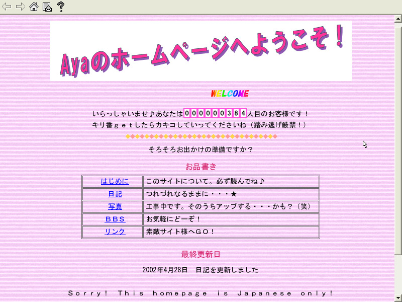
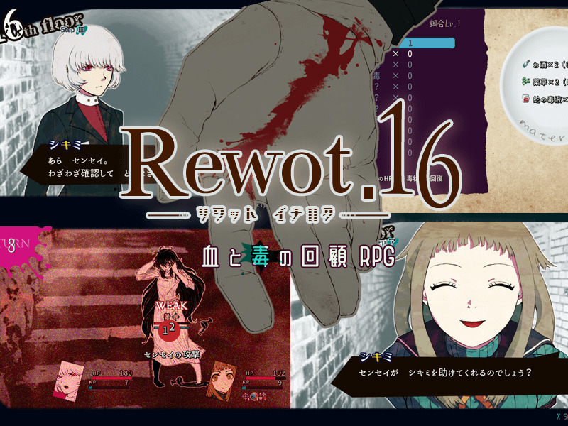
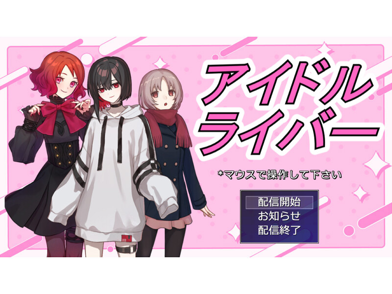

■2025-08-24 (日) 第17回ウディコン結果発表！ 上位3作品とピックアップ紹介！▼
うおおおおおおおおおということで第17回ウディコン、ついに結果発表です！！ 参加された方も投票してくださった方も、みなさま本当にお疲れさまでした！
この記事では例年のように、上位の作品と個人的ピックアップ作品をご紹介します！
【ウディコンページ】
◆第17回ウディコン1～3位紹介！
【第１位 『Ayaのホームページへようこそ！』】
作者：苺いちえ 様 ↑タイトルクリックで作品へ熱中 41.3点(2位)+斬新 27.1点(3位)+物語性 31.0点(3位)+画像音声 24.8点(6位)+遊びやすさ36.2点(3位)+その他23.5点(2位) = 183.9点

『Ayaのホームページへようこそ！』はホームページをたどりながら隠された秘密を暴いていく、ジャンルとしてはたぶん推理ゲームです！
すでにスクリーンショットの時点で香りがプンプンしてると思いますがこのゲームね！ まだ「ネットサーフィン」なんて死語を言ってたような2000年代のホームページの再現度がね！ あまりにも高いんですよ！！
さすがに私は黒いホームページにふわふわの十字架とか羽みたいなの置いたりはしてませんでしたけど、最初のサイトは実はバックが真っ黒でした！！
他にも、ホームページだけでなく当時のOSのインターフェース挙動まで細かいところまで再現してあって、昔のインターネットをご存じの方にはきっと懐かしくてテンションが上がること間違いなし！ 「ああーこんなスクリーンセーバーあったあった！」なんて具合に、おじさまおばさまが叫ぶと思います！
「そんなの知らないよ！」という若い方には、これが2000年代初頭に本当にあったホームページ感なので、ぜひね！ このウェブ上の平成レトロ（？）感を味わっていただければと思います！
そしてキリ番を踏んだらちゃんと申告しましょう！ 今よりだいぶ過剰に交流を要求する時代です！
そしてゲームとしての推理部分ですが、この時代はまだまだネットリテラシーなんて単語すら浸透してない時代の話なので、日記とか見ると色んな手がかりっぽい断片情報が見つかっちゃうわけですよ！
本作はそれらの情報を駆使して色んなものを特定して裏を暴いていく、というゲーム性です！ ゲームへの落とし込み方がうまい！ 生々しい！
リアル特定班（個人情報を断片情報から特定する）の人たちはその能力をいかんなく発揮できることでしょう！
という感じで、テーマ選びから、すみずみまでこだわりぬかれた当時っぽさの再現性、それらをしっかりゲームに落とし込めている完成度など、色々な意味で注目に値する一作だったと思います！
ウェブ歴史体験資料として、ずっと残しておきたい一本です！
【第２位 『Rewot.16ーリワット イチロクー』】
作者：植物の灰 様 ↑タイトルクリックで作品へ熱中 38.2点(3位)+斬新 21.7点(9位)+物語性 34.2点(1位)+画像音声 27.5点(1位)+遊びやすさ32.5点(6位)+その他24.0点(1位) = 177.9点

そして今年の第2位は……『Rewot.16ーリワット イチロクー』です！
本作はノンフィールドRPG！
記憶があいまいっぽい主人公『センセイ』がシキミという少女と共に塔を進んでいくのですが、その途中で『センセイ』たちの色々な過去が描写されていきます。この情報の出し方がまた興味をひかれるんですよ！
センセイに何があったのか、塔の頂上には何がいるのか、『悪魔病』とは何なのか、シキミちゃんの赤い文字の文章は一体なんなのか、そしてなんでフロア16から始まってるんだ……！
などなど気になるポイント盛りだくさんの中でストーリーは進んでいきます！
そしてこのゲームはストーリーだけじゃない！ バトルパートにもひとひねり加えられています！
というのも、「強敵」相手には基本的に消耗品である毒を駆使して戦うことになるのですが、使う毒やタイミング、毒の効果の理解が非常に重要となります！
また、センセイは「観察」で敵の情報を見て薬を得たり、「道具」でアイテム使用できたり、必殺技的な「切札」が使用可能。シキミは敵の攻撃を集める「注目」や「防御」が使用可能ですが強敵にとどめをさせない、といった感じで二人のやれることは異なるので、役割分担を考えながらうまく戦いましょう！
過激な戦闘になることもありますが、倒れても3ターンで復活できるので、それを前提に攻撃を引き受けたりすることも可能！
一方で敵が弱めになるモードも用意されていて、そういうのが苦手な人も安心です！
他にもスタイリッシュなインターフェースや演出の数々は必見！
戦闘時にコマンド選択者の指が出ている演出が普段あまり見たことなくて素敵です！
などなど、『Rewot.16ーリワット イチロクー』は物語もゲーム部分もすみずみまで練られていながら新しさも備えた、非常に完成度の高い一作です！
ぜひ遊んでみてください！ シキミちゃんかわいい！
【第３位 『Go Down, B-Girl!』】
作者：なす太郎 様 ↑タイトルクリックで作品へ熱中 37.4点(4位)+斬新 28.2点(1位)+物語性 11.4点(22位)+画像音声 26.9点(2位)+遊びやすさ37.6点(1位)+その他21.5点(3位) = 163.0点
そして今年の第3位は！
なんとまさかのブレイキンダンス（ブレイクダンス）デッキ構築ゲーム『Go Down, B-Girl!』です！
何をデッキ構築していくかというとダンスの動き！ これらがカード化されており、それを集めて試合では華麗にダンスをキメていくことになります！
ゲームの基本の流れとしては、試合までにトレーニングを積み、基本能力のフィジカルやテクニックを鍛えたり、ダンスのカードを得たり、（能力の範囲で装備可能な）パッシブ能力を得たりして準備をし、試合に臨むのが一連の流れとなります！
肝心の試合ではトレーニングで作り上げてきたデッキを使って相手とダンス勝負！
ダンスのカードには『フリーズ』と『それ以外』があって、フリーズ以外には「立→立」「立→床」「床→床」のようなタイプがあります！
そして『フリーズ』には「発動するのに必要なチェイン数」と、「立か床か」の使用条件があり、基本的には以下のタイプ順に出していきます。「立→立」だけでも2～3枚とか出せます。
「立→立」→「立→床」→「床→床」→フリーズ！
『フリーズ』はとにかく「キュッと停止ポーズしてキメるやつ」です。実際のダンスでよく見ますよね！
そして一連のダンスを互いに3ラウンドやって観客を沸かせ、審査員の評価を上げ、最終評価がこちらに傾けばその試合に勝利できます！
うまいこと観客をガチファン化させて有利に運ぶ要素もありますよ！ これ重要！
※ある観客の周囲がブルー（自分）一色になるとその内側の観客が「ガチファン」になり、レッド（相手側）に傾かなくなる。
ちなみに、カードの使用は毎ターンフル回復する「スタミナ」を消費するのですが、スタミナが足りなくても「ガッツ」という非常用ポイントが使えます！ 「ガッツ」の方は試合中には基本的に回復しないポイントなので、使いどころの見極めが重要！
このガッツによって「このターンだけは少し無理する！」ということが可能になっており、息苦しさをなくすのにかなりいい工夫となっています！ これは色んなゲームで欲しいかも！
という感じで、本作はこれらのブレイキンダンスの各種要素のゲームへの落とし込みが非常に美しい！
こういう新機軸さだったらむしろ海外に売り出してもいけるんじゃないです！？ と思ってしまうくらいです。
ダンス中もすごいアニメーションするので、ブレイキンダンスについて知らない私でもイメージしやすくてとてもありがたかったです！
試合中は、いま出せるカードや、「立→床」への状態切り替わりなどもカードに書かれていて非常に分かりやすく、初見でもどう出せばいいのかおおよそ理解可能なわかりやすさがあります！
これだけ色々なルールがあるのをパッと見で直感的に伝えられているのがあまりにもすばらしい！
そして勝利への秘訣はもちろん、「いかに強いデッキとパッシブをそろえられるか」！
どっちかというと本作は「デッキを使いながら広げていく」というよりは、一気に鍛える「育成ゲーム」的な印象の方が強い一作です。
なのでゲームは何度もプレイを繰り返して、「いま何が最も足りないか、どうシナジーを伸ばすべきか」といった『育成の理解度』を上げていくことがプレイの「うまさ」に繋がるでしょう。
ゲームを理解して上達する楽しみは、こういったランダム要素をうまく選んで進めていくゲームの一番の魅力だと思います！
ゲームの「上達感」を楽しみたい方はぜひ遊んでみてください！
◆ピックアップ作品紹介！
【第30位『アイドルライバー』】
作者：シブサワ・コウの名を継ぐ者 様 ↑タイトルクリックで作品へ熱中 7.2点(--)+斬新 13.6点(17位)+物語性 3.8点(--)+画像音声 3.2点(--)+遊びやすさ6.6点(--)+その他13.5点(13位) = 47.8点

今回の個人的はピックアップ作品はこれ！ 『アイドルライバー』です！
『アイドルライバー』はライバーを育成しつつ配信を行い、最終的にファン数を一定以上に増やすのが目標のゲームです！
『ストーリー』モードではイオリというライバーを8週間で一人前にするのがゴール！
毎週レッスンして能力を上げ、買い物で補助し、配信を行う。この一連の流れを繰り返してゲームを進めていきます。
が、そこまではきっと皆さまも想像できそうな範囲のゲーム内容！
おそらく本作の一番の面白ポイントはそこではないでしょう！
わたし的に本作の一番の見所は、『おまけモード』ないし『フリーモード』！
（※ただ2025/08/23(土)時点の終了時バージョンでは、これらの機能はカットされています）
こちらはなんと『配信者キャラと配信テーマを決めると、AIに配信パートの内容を自動生成してもらえる』というモードなのです！
Google Gemini（生成AI)のAPIキーを取得してtxtファイルに書き込むと、個々人が自由入力した「配信内容」にもとづいた、Geminiによって文章生成された展開が繰り広げられます！
なお自分の好きな「配信者」を画像や特徴込みで設定することもでき、「キャラクター」や「配信内容」を設定して配信を始めると、入力内容に応じて配信時のキャラのセリフや視聴者のコメントが自動生成される、という仕組み！
途中の選択肢も2択分は勝手に生成されますが、それらを選ばずに「自分で自由入力」することも可能です！
実際に生成された見本も撮ってみましたので、ぜひ一度ご覧下さい！
↓
『フリーモードの映像』
※ヤ○ザさんの事務所に突入する『リアル片道勇者』配信を行うアルバートとネムリの配信。ネムリが敵（？）側に気持ちよくされて寝返る展開があるのでそういうのが苦手な人はいちおうご注意。
これは架空のお話なのでとんでもないことをさせていますが、人にご迷惑をかける配信は絶対ダメですからね！？
しかし見てくださいよ、このあまりにも配信として自然な内容！
一部のセリフでキャラ名（おそらく登場キャラとして登録されてない第三者の名前）が変になってしまうところ以外は気になるところもなく、かなり高精度に楽しい内容が生成されていることが分かります！
ただし配信間の「文脈」は引き継がれないようなので、続き物をやりたいなら「説明文」内でそのあたりを説明する必要があります。その点はご注意！
残念ながら、こういった文章生成AIによるリアルタイム生成は次回の第18回ウディコンからは禁止になってしまいますが、インディーならこういった文章AIを使って、個々人に合わせたナラティブな展開をもっと作っていけるかもしれません！
『アイドルライバー』はそういう意味でゲームの一つの未来を示してくれた一作だと思います！
（おっと、念のためですが、ChatGPTみたいな文章生成AIで作った文章は「作者がちゃんとチェック済みの生成文」ならば従来通り使用可能です！ 本作のように、「(リアルタイムに生成されるなどで)作者様が内容を確認しないままゲーム内で使用される使い方」が禁止になります）
ちなみに、実は私もPC上のみで動作するローカル用の言語モデルを使って、ウディタ修正の合間に文章生成機能を使ったミニゲームを作っていたのですが、本作を見て「ああー先にやられたー！！」と思ってしまいました。
といいますか、まさかGeminiが一定分でも無料で使えるとは！ 知らなかったぁぁぁ！
というのも、私が試していた「ローカル用の言語モデル」はGoogle(Gemini)やOpenAI(GPT)が直接提供してる生成AIに比べるとまだまだポンコツ気味だったり、高度なGPU（GeForceみたいなゲーム用画像処理の基板）を積んでないといいモデルが動せかないことが多いんですよ。
それに比べてGeminiさんちみたいな高性能な文章AIが無料で使えるのは、遊ぶ人にとっても一番手軽ですし朗報です！ こっちのほうがまだよさそうなので、うちも今度Geminiを試してみようと思います！
私が作ってるミニゲームも、もしゲームとして動くようになったらお見せしようと思います！ ガッツリ作れば2週間もあれば一区切りしたものが完成しそうなんですけど、その時間も作業優先度も取れていないという！
もし公開されるときが来たなら、そのときは見てくださると幸いです。
ということで、今回ご紹介させていただいた作品はどれも面白いので、ぜひ遊んでみてください！（『アイドルライバー』はぜひAI使用可能版どっかに出してくださぁぁぁい！）
特に上位12作品は、どれを遊んでも印象に残る一本になると思います！ 何なら順位が付いている作品すべてが印象に残りますし、順位外でも面白いのがいっぱいあります！
また、結果発表ページには部門別順位や一般投票コメントなども掲載されていますので、それらも参考にしつつ、気になる作品があればぜひ触ってみてください！
たとえば新しいゲームに触れてみたい人は「斬新さ」部門を、キャラクターや記憶に残る物語を楽しみたい人は「物語性」部門がおすすめですよ！
【ウディコンページへ】
◆次回、第18回について！
ウディコンは来年2026年の『第18回』も開催予定で、すでにスケジュールも決定済みです！ 残り328日！私が無事なら確実に開催しますので、皆さまの作品、楽しみにお待ちしております！
今年は「特定のウディコン作品が記事に取り上げられて話題になる」といったバズイベントは見当たらなかった感じでしたが、それゆえに今のウディコンの地力が分かる回だったと思います。
そういったボーナスがなくなったら審査規模的にまずいことになるかもしれない、と思っていましたが、いつもウディコンに来てくださる一般審査者さまの数や作品審査数には非常に余裕があるレベルだったので、まだまだ当面は問題なく運営できそうです！
みなさまの熱意ある審査、コメント、そして素晴らしい作品の数々、本当に感謝の限りです！
それでは、第17回ウディコンに関わってくださった全ての関係者の皆さま、今年も本当にありがとうございました！
よければ来年の夏もぜひ、遊びに来ていただけますと幸いです！
2025-08-24 (日)  カテゴリ: ウディタ
カテゴリ: ウディタ
 カテゴリ: ウディタ
カテゴリ: ウディタ